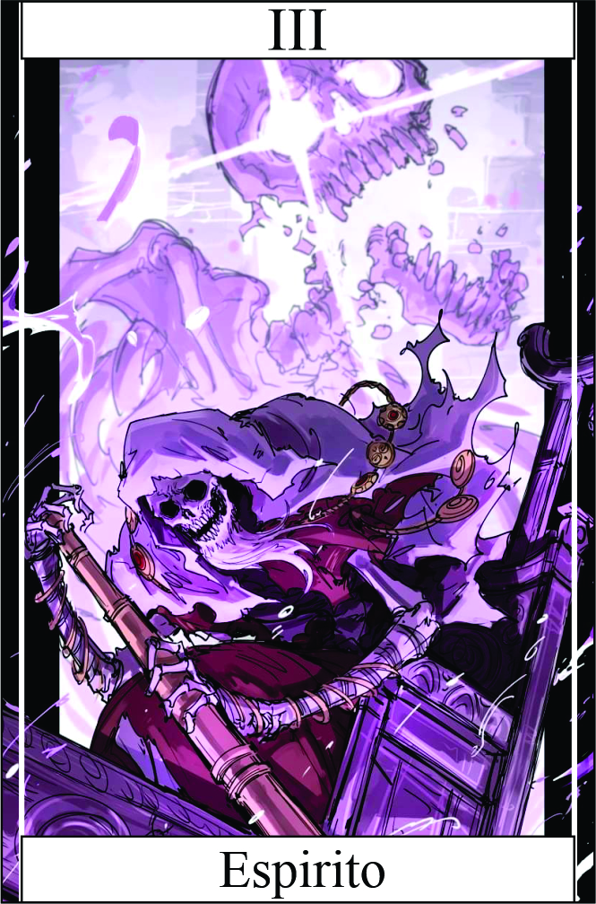

Espirito
Têndencia: Neutro Mal
Passiva:
Campo de Defesa Espiritual:
Essa habilidade permite que você canalize sua energia espiritual para formar uma barreira protetora, que age como um escudo contra ataques e danos.
Quando ativado, o campo de defesa espiritual é capaz de reduzir o dano que você sofre pela metade, proporcionando uma proteção significativa em situações de combate ou perigo.
No entando você precisa acumular almas para conseguir ativa-la, você sela almas no seu corpo e utiliza elas para usar passivas ou algumas skill. Conhecido como Força Espiritual (FE), limite máximo: 5 almas
Legado 1 - Drenagem Espiritual
você possui a capacidade de sugar a energia espiritual do seu alvo, causando 3 pontos de dano por rodada. Para usar essa habilidade, é necessário ter contato visual com o alvo.
Essa habilidade permite que você extraia a energia vital do seu oponente, enfraquecendo-o gradualmente ao longo do combate. Ao estabelecer contato visual, você inicia o processo de drenagem, causando um dano contínuo de 3 pontos a cada rodada.
Drenando e causando dano +3 energia espiritual
Legado 2 - Manifestação Etérea
O campeão transcende temporariamente seu corpo físico, transformando-se em um espírito etéreo. Durante essa manifestação, o campeão se torna intangível, impossível de ser atingido por ataques físicos. Essa forma etérea permite ao campeão atravessar obstáculos sólidos e se mover livremente pelo campo de batalha.
No entanto, enquanto estiver na forma etérea, o campeão não pode causar dano direto aos inimigos. Ele se torna incapaz de realizar ataques físicos ou habilidades ofensivas. O foco principal da Manifestação Etérea é proporcionar uma capacidade evasiva e estratégica, permitindo ao campeão evitar ataques inimigos e reposicionar-se taticamente.
A duração da habilidade é curta, uma vez que manter a forma etérea requer um gasto constante de energia espiritual. Após o término da habilidade, o campeão retorna à sua forma física, estando novamente vulnerável a ataques. A Manifestação Etérea pode ser utilizada de forma combinada com outras habilidades, criando estratégias defensivas e surpreendendo os inimigos com movimentos inesperados.
Você fica imune ataques fisico e grande maiora de alguns skill
Condição para ativar a habilidade:
O campeão precisa ter acumulado uma quantidade mínima de energia espiritual. Cada uso consome 1 alma da prisão das almas.
Legado 3 - Domínio Umbral:
O campeão evoca seu domínio sobre as sombras e os espíritos, aumentando temporariamente sua velocidade de movimento e dano. Durante esse período, o campeão se torna um verdadeiro Senhor das Almas, canalizando as energias espirituais para potencializar seus ataques. Os inimigos que ousarem enfrentá-lo sentirão o peso opressor de sua presença espiritual e serão envoltos por sombras que drenam sua energia vital.
+ 1 Destreza | Dano Adicional +2 | 1 Canalizador por round dano bônus 1d4 (se sofrer dano quando estar canalizando resetar o canalizandor) limite de acumulo 5
Restrição de uso:
O campeão precisa ter uma quantidade mínima de energia espiritual acumulada